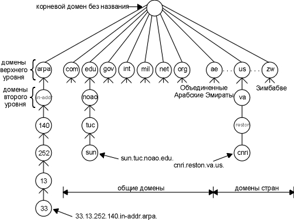

Глава 14 DNS: система имен доменов
Система имен доменов (DNS - Domain Name System) это распределенная база данных, которая используется приложениями TCP/IP, для установления соответствия между именами хостов и IP адресами. DNS также используется для маршрутизации электронной почты. Мы используем термин распределенная, потому что на одном узле Internet не хранится вся необходимая информация. Каждый узел (университет, университетский городок, компания или отдел внутри компании) поддерживает собственую информационную базу данных и запускает программу сервер, которая может отправить запрос по Internet к другим системам. DNS предоставляет протокол, который позволяет клиентам и серверам общаться друг с другом.
С точки зрения приложения, доступ к DNS осуществляется посредством разборщика (resolver) (разборщик (resolver) - подпрограммы, которые используются для создания, отправки и интерпретации пакетов, используемых серверами имен Internet). В Unix системах, к разборщику можно получить доступ через две библиотечные функции, gethostbyname(3) и gethostbyaddr(3), которые линкуются с приложением, когда оно строится. Первая воспринимает в качестве аргумента имя хоста и возвращает IP адрес, а вторая воспринимает в качестве аргумента IP адрес и возвращает имя хоста. Разборщик устанавливает контакты с одним или несколькими серверами DNS (name servers), чтобы установить это соответствие.
На рисунке 4.2 показано, что разборщик - это часть приложения. Он не является частью ядра операционной системы как протоколы TCP/IP. Приложение должно конвертировать имя хоста в IP адрес, перед тем как оно попросит TCP открыть соединение или послать датаграмму с использованием UDP. Протоколы TCP/IP внутри ядра ничего не знают о DNS.
В этой главе мы рассмотрим, как разборщики общаются с DNS серверами с использованием протоколов TCP/IP (в основном UDP). Однако мы не будем рассматривать установку и администрирование DNS серверов или все опции, существующие у разборщиков и серверов. Это может составить еще одну книгу. (В публикации [Albitz and Liu 1992] приведены подробности функционирования стандартных Unix разборщиков и серверов DNS.)
RFC 1034 [Mockapetris 1987a] описывает концепции, лежащие в основе DNS, а RFC 1035 [Mockapetris 1987b] содержит подробности разработки и спецификации DNS. Наиболее широкоиспользуемая реализация DNS, как разборщика, так и сервера - BIND (Berkeley Internet Name Domain). Процесс сервера называется named. Анализ траффика, генерируемого DNS в глобальных сетях, приводится в [Danzig, Obraczka, and Kumar 1992].
Пространство имен DNS имеет иерархическую структуру, которая внешне напоминает файловую систему Unix. На рисунке 14.1 показана иерархическая организация DNS.

Рисунок 14.1 Иерархическая организация DNS.
Каждый узел (кружочки на рисунке 14.1) имеет метку длиной до 63 символов. Корень дерева это специальный узел без метки. Метки могут содержать заглавные буквы или маленькие. Имя домена (domain name) для любого узла в дереве - это последовательность меток, которая начинается с узла выступающего в роли корня, при этом метки разделяются точками. (Здесь видно отличие от файловой системы Unix, где полный путь всегда начинается с вершины (корня) и опускается вниз по дереву.) Каждый узел дерева должен иметь уникальное имя домена, однако одинаковые метки могут быть использованы в различных точках дерева.
Имя домена, которое заканчивается точкой, называется абсолютным именем домена (absolute domain name) или полным именем домена (FQDN - fully qualified domain name). Например, sun.tuc.noao.edu.. Если имя домена не заканчивается на точку, подразумевается, что имя должно быть завершено. Как будет закончено имя, зависит от используемого программного обеспечения DNS. Если незаконченное имя состоит из двух или более меток, его можно воспринимать как законченное или полное; иначе справа от имени должен быть добавлен локальный суффикс. Например, имя sun может быть завершено локальным суффиксом .tuc.noao.edu..
Домены верхнего уровня поделены на три зоны:
- arpa это специальный домен, используемый для сопоставления адрес - имя (раздел "Запросы указателя" этой главы).
- Семь 3-символьных доменов называются общими (generic) доменами. В некоторых публикациях они называются организационными (organizational) доменами.
- Все 2-символьные домены, основанные на кодах стран, можно найти в ISO 3166. Они называются доменами стран (country), или географическими (geographical) доменами.
На рисунке 14.2 приведен список обычной классификации семи основных доменов.
Домен |
Описание |
com |
коммерческие организации |
edu |
учебные организации |
gov |
правительственные организации США |
int |
международные организации |
mil |
военные организации США |
net |
сети |
org |
другие организации |
Рисунок 14.2 3-символьные общие домены.
Иногда считается, что 3-символьные общие домены используются только организациями Соединенных Штатов, а 2-символьные домены стран всеми остальными, однако это не так. Существуют неамериканские организации в основных доменах, и множество организаций в Соединенных Штатах находятся в домене страны .us. (RFC 1480 [Cooper and Postel 1993] описывает домен .us более подробно.) Единственные общие домены, которые закреплены за Соединенными Штатами, это .gov и .mil.
Многие 2-символьные домены стран второго уровня, очень похожи на основные домены: .ac.uk, например, принадлежит академическим институтам, а .co.uk коммерческим организациям Великобритании.
Одна важная характеристика DNS, не показанная на рисунке 14.1, это передача ответственности внутри DNS. Не существует организации, которая бы управляла и обслуживала все дерево в целом и каждую метку в отдельности. Вместо этого, одна организация (NIC) обслуживает только часть дерева (домены верхнего уровня), а ответственность за определенные зоны передает другим организациям.
Зона (zone) это отдельно администрируемая часть дерева DNS. Например, домен второго уровня noao.edu это отдельная зона. Многие домены второго уровня поделены на меньшие зоны. Например, университет может поделить свою зону на подзоны по факультетам, а компания может поделить себя на зоны по принципу деления на филиалы или отделы.
Если Вы знакомы с файловой системой Unix, то обратите внимание, что деление дерева DNS на зоны очень напоминает деление на логические файловые системы физических дисковых разделов. Однако мы не можем сказать, основываясь на рисунке 14.1, под чьим руководством находятся зоны, также как мы не можем по подобному рисунку сказать, какие директории в файловой системе находятся в определенном дисковом разделе.
С того момента, как выбрана организация или персона, которая несет ответственность за управление зоной, эта организация или персона должна организовать несколько серверов DNS (name servers) для этой зоны. Как только в зоне появляется новая система, администратор этой зоны помещает имя и IP адрес нового хоста в базу данных сервера DNS. В небольших университетах, например, один человек может делать это каждый раз при появлении новой системы, однако в больших университетах ответственность должна быть распределена (например, по департаментам), так как один человек не может осуществлять эту работу в целом.
Сервер DNS, скажем, обслуживает одну зону или несколько зон. Человек, который несет ответственность за зону, администрирует основной сервер DNS (primary name server) для этой зоны и один или несколько вторичных серверов DNS (secondary name servers). Первичный и вторичный сервера должны быть независимы и избыточны таким образом, чтобы система DNS не вышла из строя при отказе одного из серверов.
Основное отличие между первичными и вторичными серверами заключается в том, что первичные загружают всю необходимую информацию из дисковых файлов, тогда как вторичные получают информацию от первичного. Процесс передачи информации от первичного сервера вторичному называется передачей зоны (zone transfer). Когда в зоне появляется новый хост, администратор добавляет соответствующую информацию (минимум, имя и IP адрес) в дисковый файл на первичном сервере. После чего первичный сервер DNS уведомляется о необходимости повторно считать свои конфигурационные файлы. Вторичные сервера регулярно опрашивают первичные (обычно каждые 3 часа), и если первичные содержат новую информацию, вторичный получает ее с использованием передачи зоны.
Что произойдет, если сервер DNS не содержит необходимой информации? Он должен установить контакт с другим сервером DNS. (В этом заключается распределенная природа DNS.) Однако не каждый сервер DNS знает, как обратиться к другому серверу. Вместо этого каждый сервер DNS должен знать, как установить контакт с корневыми серверами DNS (root name servers). В апреле 1993 года существовало восемь корневых серверов, все первичные сервера должны знать IP адреса каждого корневого сервера. (Эти IP адреса находятся в конфигурационных файлах первичного сервера. Первичные сервера должны знать именно IP адреса корневых серверов, а не их DNS имена.) Корневой сервер, в свою очередь, знает имена и положения (IP адрес) каждого официального сервера DNS для всех доменов второго уровня. При этом возникает последовательный процесс: запрашивающий сервер должен установить контакт с корневым сервером. Корневой сервер сообщает запрашивающему серверу о необходимости обратиться к другому серверу и так далее. Мы рассмотрим эту процедуру и соответствующие примеры позже в этой главе.
Вы можете получить текущий список корневых серверов, воспользовавшись анонимным (anonymous) FTP. Получите файл netinfo/root-servers.txt с ftp.rs.internic.net или nic.ddn.mil.
Фундаментальная характеристика DNS - это кэширование (caching). Когда DNS сервер получает информацию о соответствии (скажем, IP адресов именам хостов), он кэширует эту информацию таким образом, что в случае следующего запроса может быть использована информация из кэша, дополнительный запрос на другие сервера не делается. В разделе "Кэширование" этой главы мы рассмотрим кэширование более подробно.
Для DNS запроса и для DNS отклика используется одинаковый формат. На рисунке 14.3 показан общий формат DNS сообщения.

Рисунок 14.3 Общий формат DNS запроса и ответа.
Сообщение содержит фиксированный 12-байтный заголовок, за которым следуют четыре поля переменной длины.
Значение в поле идентификации (identification) устанавливается клиентом и возвращается сервером. Это поле позволяет клиенту определить, на какой запрос пришел отклик.
16-битовое поле флагов (flags) поделено на несколько частей, как показано на рисунке 14.4.

Рисунок 14.4 Поле флагов (flags) в заголовке DNS.
Описание каждого поля мы начнем с крайне левых битов.
- QR (тип сообщения), 1-битовое поле: 0 обозначает - запрос, 1 обозначает - отклик.
- opcode (код операции), 4-битовое поле. Обычное значение 0 (стандартный запрос). Другие значения - это 1 (инверсный запрос) и 2 (запрос статуса сервера).
- AA - 1-битовый флаг, который означает "авторитетный ответ" (authoritative answer). Сервер DNS имеет полномочия для этого домена в разделе вопросов.
- TC - 1-битовое поле, которое означает "обрезано" (truncated). В случае UDP это означает, что полный размер отклика превысил 512 байт, однако были возвращены только первые 512 байт отклика.
- RD - 1-битовое поле, которое означает "требуется рекурсия" (recursion desired). Бит может быть установлен в запросе и затем возвращен в отклике. Этот флаг требует от DNS сервера обработать этот запрос самому (т.е. сервер должен сам определить требуемый IP адрес, а не возвращать адрес другого DNS сервера), что называется рекурсивным запросом (recursive query). Если этот бит не установлен и запрашиваемый сервер DNS не имеет авторитетного ответа, запрашиваемый сервер возвратит список других серверов DNS, к которым необходимо обратиться, чтобы получить ответ. Это называется повторяющимся запросом (iterative query) . Мы рассмотрим примеры обоих типов запросов в следующих примерах.
- RA - 1-битовое поле, которое означает "рекурсия возможна" (recursion available). Этот бит устанавливается в 1 в отклике, если сервер поддерживает рекурсию. Мы увидим в наших примерах, что большинство серверов DNS поддерживают рекурсию, за исключением нескольких корневых серверов (коневые сервера не в состоянии обрабатывать рекурсивные запросы из-за своей загруженности).
- Это 3-битовое поле должно быть равно 0.
- rcode это 4-битовое поле кода возврата. Обычные значения: 0 (нет ошибок) и 3 (ошибка имени). Ошибка имени возвращается только от полномочного сервера DNS и означает, что имя домена, указанного в запросе, не существует.
Следующие четыре 16-битных поля указывают на количество пунктов в четырех полях переменной длины, которые завершают запись. В запросе количество вопросов (number of questions) обычно равно 1, а остальные три счетчика равны 0. В отклике количество ответов (number of answers) по меньшей мере равно 1, а оставшиеся два счетчика могут быть как нулевыми, так и ненулевыми.
Раздел вопросов в DNS запросе
Формат каждого вопроса в разделе вопросов (question) показан на рисунке 14.5. Обычно присутствует только один вопрос.
Имя запроса (query name) это искомое имя. Оно выглядит как последовательность из одной или нескольких меток. Каждая метка начинается с 1-байтового счетчика, который содержит количество следующих за ним байт. Имя заканчивается байтом равным 0, который является меткой с нулевой длиной. И является, в свою очередь, меткой корня. Каждый счетчик байтов должен быть в диапазоне от 0 до 63, так как длина метки ограничена 63 байтами.

Рисунок 14.5 Формат раздела вопроса (question) в запросе DNS.
(Дальше в этом разделе мы увидим, что байт счетчик с двумя старшими битами, установленными в 1, значения от 192 до 255, используется в схеме со сжатием.) В отличие от многих других форматов сообщений, которые мы рассмотрели, этому полю разрешено заканчиваться на ограничителе не равном 32 битам. Заполнение не используется.
На рисунке 14.6 показано, как хранится имя домена gemini.tuc.noao.edu.

Рисунок 14.6 Представление имени домена gemini.tuc.noao.edu.
У каждого вопроса есть тип запроса (query type), а каждый отклик (называемый записью ресурса, о чем мы поговорим ниже) имеет тип (type). Существует около 20 различных значений, некоторые из которых в настоящее время уже устарели. На рисунке 14.7 показаны некоторые из этих значений. Тип запроса это надмножество (множество, подмножеством которого является данное множество) типов: два из показанных значений, могут быть использованы только в вопросах.
Рисунок 14.7 Значения type и query type для DNS вопросов и ответов.
Наиболее распространенный тип запроса - тип A, который обозначает, что необходим IP адрес для запрашиваемого имени (query name). PTR запрос требует имена, соответствующие IP адресу. Это запрос указателя, который мы опишем в разделе "Запросы указателя" этой главы. Другие типы запросов мы опишем в разделе "Записи ресурсов" этой главы.
Класс запроса (query class) обычно равен 1, что указывает на адреса Internet. (В некоторых случаях поддерживаются не-IP значения.)
Часть записи ресурса в отклике DNS
Последние три поля в DNS сообщении это ответы (answers), полномочия (authority) и дополнительная информация (additional information), общий формат называется записью ресурса (RR - resource record). На рисунке 14.8 показан формат записи ресурса.

Рисунок 14.8 Формат записи ресурса DNS.
Имя домена (domain name) это имя, которому соответствуют следующие данные ресурса. Формат имени домена тот же, что мы описали ранее для поля имени запроса (query name) (рисунок 14.6).
Тип (type) указывает на один из типов кодов RR. Это то же самое, что и значения типа запроса (query type), которые мы описали раньше. Для данных Internet класс (class) обычно установлен в 1.
Поле время жизни (time-to-live) это количество секунд, в течение которых RR может быть кэширована клиентом. Обычно TTL RR равно 2 дням.
Длина записи ресурса (resource data length) указывает на количество данных ресурса (resource data). Формат этих данных зависит от типа (type). Для типа равного 1 (запись A) данные ресурса - это 4-байтный IP адрес. Сейчас мы описали основной формат DNS запросов и откликов.
Теперь посмотрим с использованием tcpdump, как они упаковываются в пакеты и как происходит обмен.
Давайте посмотрим, как происходит общение между разборщиком и сервером DNS. Мы запустили клиента Telnet с хоста sun на хост gemini, подключившись к серверу времени:
sun % telnet gemini daytime
Trying 140.252.1.11 ...
первые
три строки вывода от Telnet клиента
Connected to gemini.tuc.noao.edu.
Escape character is '^]'.
Wed Mar 24 10:44:17 1993
вывод
от сервера дневного времени
Connection closed by foreign host. вывод от Telnet клиента
В этом примере мы указали разборщику на хосте sun (где запущен клиент Telnet) использовать сервер DNS на хосте noao.edu (140.252.1.54). На рисунке 14.9 показано взаимное расположение этих трех систем.

Рисунок 14.9 Системы, используемые в примере работы DNS.
Как мы уже упомянули ранее, разборщик является частью клиента. Он устанавливает контакт с сервером DNS, чтобы получить IP адрес, перед тем как будет установлено TCP соединение между Telnet и сервером времени.
На этом рисунке мы опустили подробности, описывающие, как происходит общение между sun и Ethernet сетью 140.252.1, которое в действительности осуществляется по SLIP каналу, потому что это не относится к нашим рассуждениям. Мы запустим tcpdump на SLIP канале, чтобы посмотреть, как происходит обмен пакетами между разборщиком и сервером DNS.
Файл /etc/resolv.conf на хосте sun сообщает разборщику о необходимости сделать следующее:
sun % cat /etc/resolv.conf
nameserver 140.252.1.54
domain tuc.noao.edu
Первая строка сообщает IP адрес DNS сервера - хоста noao.edu. Может быть указано до трех строк nameserver, таким образом, будет обеспечен запасной сервер на случай, если один из них выключен или недоступен. Строка domain содержит домен по умолчанию. Если искомое имя не является полным именем домена (не заканчивается точкой), к имени добавляется имя домена по умолчанию .tuc.noao.edu. Именно поэтому мы можем ввести telnet gemini вместо telnet gemini.tuc.noao.edu.
На рисунке 14.10 показан обмен пакетами между разборщиком и сервером DNS.
1 0.0
140.252.1.29.1447
> 140.252.1.54.53: 1+ A?
gemini.tuc.noao.edu.
(37)
2 0.290820 (0.2908)
140.252.1.54.53 >
140.252.1.29.1447: 1* 2/0/0 A
140.252.1.11
(69)
Рисунок 14.10 Вывод команды tcpdump для запроса на сервер DNS на хосте gemini.tuc.noao.edu.
Мы проинструктировали tcpdump не печатать имена доменов для IP адресов источника и назначения каждой IP датаграммы. Вместо этого он печатает 140.252.1.29 для клиента (разборщик) и 140.252.1.54 для сервера DNS. Порт 1447, используемый клиентом, это порт, назначаемый динамически, а 53 это заранее известный порт DNS сервера. Если tcpdump постарается напечатать имена вместо IP адресов, ему придется обратиться к тому же DNS серверу (осуществляя запрос указателя), что может привести к нежелательному выводу.
Начиная со строки 1, поле после двоеточия (1+) означает, что поле идентификации равно 1, а знак плюс обозначает, что установлен флаг RD (требуется рекурсия). Мы видим, что по умолчанию разборщик требует рекурсию.
Следующее поле, A?, означает, что тип запроса - A (мы хотим получить IP адрес), а маркировка вопроса обозначает, что это запрос (не ответ). Затем печатается имя запроса: gemini.tuc.noao.edu.. Разборщик добавляет последнюю точку к имени запроса, указывая на то, что это абсолютное имя домена.
Длина пользовательских данных в UDP датаграмме составляет 37 байт: 12 байт - заголовок фиксированного размера (рисунок 14.3), 21 байт - имя запроса (рисунок 14.6) и 4 байта - тип запроса и класс запроса. То что UDP датаграмма имеет нечетную длину напоминает нам, что в DNS сообщениях не используются биты заполнения.
Строка 2 в выводе команды tcpdump это ответ от DNS сервера, где 1* в поле идентификации со звездочкой обозначает, что установлен флаг AA (авторитетный ответ). (Мы ожидали от сервера именно этого, так как первичный сервер для домена noao.edu имеет полное представление об именах внутри этого домена.)
Вывод 2/0/0 показывает количество записей ресурсов в трех последних полях с переменной длиной отклика: 2 ответ RR, 0 полномочия RR и 0 дополнительные RR. Команда tcpdump печатает только первый ответ, который в данном случае имеет тип A (IP адрес) со значением 140.252.1.11.
Почему мы получили два ответа на наш запрос? Потому что хост gemini имеет несколько интерфейсов. Поэтому возвращено два IP адреса. Другое полезное средство, использующее DNS, - это программа host. Она позволяет нам отправить запрос на DNS сервер и посмотреть что вернется. Если мы запустим эту программу, то увидим два IP адреса для хоста gemini:
sun % host gemini
gemini.tuc.noao.edu A 140.252.1.11
gemini.tuc.noao.edu A 140.252.3.54
Первый ответ на рисунке 14.10 и первая строка вывода команды host - IP адрес, принадлежащий той же подсети (140.252.1), что и запрашивающий хост. В этом нет ничего странного. Если сервер DNS и хост, отправляющий запрос, находятся в той же самой сети (или подсети), BIND сортирует результаты таким образом, чтобы адреса, принадлежащие общей сети, появлялись в первую очередь.
Мы также можем получить доступ к хосту gemini с использованием другого адреса, однако это будет не так эффективно. С использованием traceroute в этом примере можно увидеть, что обычный путь от подсети 140.252.1 к 140.252.3 не проходит через хост gemini, а проходит через другой маршрутизатор, который подключен к обеим сетям. В данном случае, если мы получим доступ к gemini через другой IP адрес (140.252.3.54), все пакеты потребуют еще одной дополнительной пересылки. Мы вернемся к этому примеру и рассмотрим более подробно причины, по которым используется альтернативный маршрут, в разделе "Дополнительные примеры" главы 25, где мы сможем использовать SNMP, чтобы посмотреть таблицу маршрутизации маршрутизатора. Существуют и другие программы, предоставляющие простой интерактивный доступ к DNS. Программа nslookup поставляется с большинством реализаций DNS. Глава 10 [Albitz and Liu 1992] подробно описывает эту программу. Программа dig (Domain Internet Groper) это еще одна общедоступная программа, с помощью которой можно отправить запросы на DNS сервера. Программа doc (Domain Obscenity Control) - shellовский скрипт, который использует dig и диагностирует поведение доменов, отправляя запросы на соответствующие DNS сервера и осуществляя простой анализ откликов. В приложении F подробно рассказано, как можно получить эти программы.
И последняя деталь, на которую необходимо обратить внимание в этом примере, это размер UDP данных в отклике: 69 байт. Чтобы объяснить эту величину, надо знать две вещи.
- Вопрос возвращается в отклике.
- При отправке отклика с именами доменов может быть использовано множество повторов. Поэтому используется схема сжатия. И действительно, в нашем примере имя домена gemini.tuc.noao.edu появляется трижды. Схема сжатия довольно проста. Везде, где в имени домена появляется метка, используется единственный байт-счетчик (который находится в диапазоне от 0 до 63), у которого два старших бита установлены в 1. Это 16-битный указатель, а не 8-битный байт-счетчик. Следующие 14 байт в указателе определяют смещение следующей метки в DNS сообщении. (Смещение первого байта в поле идентификации равно 0.) Мы специально сказали, что этот указатель может появиться там, где появляется метка, а не только там, где появляется полное имя домена, однако возможно, что указатель будет иметь как форму полного имени домена, так и всего лишь окончательной части имени. (Это потому, что окончательные метки в именах заданных доменов часто бывают идентичны.)
На рисунке 14.11 показан формат DNS отклика, что соответствует строке 2 на рисунке 14.10. Здесь показаны IP и UDP заголовки, чтобы напомнить о том, что DNS сообщения обычно инкапсулируются в UDP датаграммы. Мы специально показали байты счетчики в метках имен доменов в вопросе. Два возвращенных ответа одинаковы, за исключением различных IP адресов. В этом примере каждый указатель в ответе имеет значение 12, что является смещением от начала DNS заголовка полного имени домена.
И последнее, на что необходимо обратить внимание, это вторая строка из вывода команды Telnet, которая повторена здесь:
sun % telnet gemini daytime
мы
напечатали только gemini
Trying 140.252.1.11 ...
Connected to gemini.tuc.noao.edu. однако
в выводе клиента Telnet появился FQDN

Рисунок 14.11 Формат DNS отклика, соответствующий строке 2 на рисунке 14.10.
Мы указали только имя хоста (gemini), а не полное имя домена (FQDN) , однако клиент Telnet вывел именно полное имя домена. В данном случае клиент Telnet ищет имя, которое мы ввели, вызвав разборщик (gethostbyname), который возвращает IP адрес и FQDN. Затем Telnet выводит IP адрес, с которым он старается установить TCP соединение, и когда соединение установлено, печатает FQDN.
Пауза между вводом команды Telnet и печатью IP адреса, вызвана тем, что разборщик устанавливает контакт с DNS сервером, чтобы преобразовать имя в IP адрес. Пауза между выводом Trying и Connected to, вызвана установлением TCP соединения между клиентом и сервером, а не DNS.
Для понимания работы DNS важно знать, как обрабатываются запросы указателя - задан IP адрес, возвращается имя (или имена), соответствующее этому адресу.
Во-первых, вернемся к рисунку 14.1 и рассмотрим домен верхнего уровня arpa, а также домен in-addr, находящийся ниже. Когда организация вступает в Internet и получает часть простраства имен DNS, как, например, noao.edu, она также получает право на часть пространства имен in-addr.arpa, соответствующее ее IP адресам в Internet. В данном случае noao.edu - это сеть класса B с идентификатором 140.252. Уровень дерева DNS ниже in-addr.arpa должен быть первым байтом IP адреса (140 в данном примере), следующий уровень это следующий байт IP адреса (252), и так далее. Однако помните, что имена пишутся, снизу-вверх по дереву DNS. Это означает, что DNS имя хоста sun с IP адресом 140.252.13.33 будет 33.13.252.140.in-addr.arpa.
Мы должны написать 4 байта IP адреса задом наперед, потому что полномочия делегируются на основе идентификаторов сетей: первый байт адрес класса A, первый и второй байты адреса класса B, а первый, второй и третий байты это адреса класса C. Первый байт IP адреса должен быть непосредственно под меткой in-addr, однако полные имена доменов (FQDN) пишутся снизу вверх по дереву. Если бы FQDN писались сверху вниз, DNS имя для IP адреса было бы arpa.in-addr.140.252.13.33, однако в этом случае FQDN для хоста должно быть edu.noao.tuc.sun.
Без отдельных ветвей дерева DNS осуществить преобразования адрес - имя, (обратное преобразование) можно было бы только начиная от корня дерева и просматривая каждый домен верхнего уровня. При сегодняшнем размере Internet это могло бы занять дни или даже недели. Использование же in-addr.arpa приемлемый вариант, несмотря на переставленные местами байты в IP адресе и специальные домены, иногда вносящие определенную путаницу.
Однако встретиться с доменом in-addr.arpa и переставленными байтами в IP адресе можно только тогда, когда мы общаемся с DNS непосредственно, используя, такие программы как host или просматривая пакеты с использованием tcpdump. При работе приложения, разборщик (gethostbyaddr) обычно воспринимает IP адрес и возвращает информацию о хосте. Перестановка байтов и добавление домена in-addr.arpa осуществляется разборщиком автоматически.
Пример
Давайте воспользуемся программой host, чтобы осуществить поиск указателя, и при этом просмотрим с использованием tcpdump как происходит обмен пакетами. Мы используем те же начальные установки как на рисунке 14.9, запустив программу host на хосте sun с тем же самым сервером DNS noao.edu. Мы указали IP адрес нашего хоста svr4:
sun % host 140.252.13.34
Name: svr4.tuc.noao.edu
Address: 140.252.13.34
Так как единственный аргумент в командной строке это IP адрес, программа host автоматически генерирует запрос указателя. На рисунке 14.12 показан вывод команды tcpdump.
1 0.0
140.252.1.29.1610
> 140.252.1.54.53: 1+ PTR?
34.13.252.140.in-addr.arpa.
(44)
2 0.332288 (0.3323) 140.252.1.54.53 >
140.252.1.29.1610: 1* 1/0/0 PTR
svr4.tuc.noao.edu.
(75)
Рисунок 14.12 Вывод tcpdump для запроса указателя.
Из строки 1 видно, что идентификатор равен 1, установлен флаг требования рекурсии (знак плюс), и тип запроса это PTR. (Вспомним, что марка вопроса обозначает, что это запрос, а не отклик.) Размер данных составляет 44 байта, из которых 12 байт - DNS заголовок, 28 байт - 7 меток в имени домена, и 4 байта это тип запроса и класс запроса.
В отклике установлен бит авторитетного ответа (звездочка) и содержится одна запись ресурса (RR) ответа. Тип RR это PTR, а данные ресурса содержат имя домена.
От разборщика к серверу DNS в качестве запроса указателя передается не 32-битный IP адрес, а имя домена 34.13.252.140.in-addr.arpa.
Проверка неправильного имени хоста
Когда IP датаграмма прибывает на хост сервера, будь то UDP датаграмма или TCP сегмент с требованием установить соединение, все что доступно процессу сервера это IP адрес клиента и номер порта (UDP или TCP). Некоторые сервера требуют, чтобы IP адрес клиента имел запись указателя в DNS. В разделе "Примеры FTP" главы 27 мы рассмотрим пример, иллюстрирующий это, используя анонимный FTP с неизвестного IP адреса.
Другие серверы, как, например, сервер Rlogin (глава 26), требуют не только то, чтобы IP адрес клиента имел запись указателя, но и еще спрашивают DNS об IP адресе, соответствующем имени, возвращенном в PTR отклике, и требуют, чтобы один из возвращенных адресов совпадал с IP адресом в принятой датаграмме. Эта проверка осуществляется потому, что пункты в файле .rhosts (глава 26, раздел "Протокол Rlogin") содержат имя хоста, а не IP адрес; таким образом, сервер хочет убедиться, что имя хоста действительно соответствует входящему IP адресу.
Некоторые производители автоматически помещают эту проверку в программы разборщика, конкретно в функцию gethostbyaddr. При этом подобная проверка становится доступной для любой программы, использующей разборщик. Отпадает необходимость помещать эту проверку в каждое приложение.
Мы можем увидеть, как это происходит, с помощью библиотеки разборщика SunOS 4.1.3. Мы написали простую программу, которая осуществляет запрос указателя путем вызова функции gethostbyaddr. Также мы поместили записи в файл /etc/resolv.conf таким образом, чтобы использовать в качестве DNS сервера хост noao.edu, получить доступ к которому можно через SLIP канал с хоста sun. На рисунке 14.13 показан вывод команды tcpdump, полученный от SLIP канала, при вызове функции gethostbyaddr, в случае, когда получается имя, соответствующее IP адресу 140.252.1.29 (хост sun).
1 0.0
sun.1812
> noao.edu.domain: 1+ PTR?
29.1.252.140.in-addr.arpa.
(43)
2 0.339091 (0.3391) noao.edu.domain > sun.1812: 1*
1/0/0 PTR
sun.tuc.noao.edu.
(73)
3 0.344348 (0.0053) sun.1813 > noao.edu.domain: 2+
A?
sun.tuc.noao.edu.
(33)
4 0.669022 (0.3247) noao.edu.domain > sun.1813: 2*
2/0/0 A
140.252.1.29
(69)
Рисунок 14.13 Вызов функции разборщика, которая осуществляет запрос указателя.
В строке 1 запрос указателя, в строке 2 отклик. Однако, функция разборщика автоматически посылает запрос об IP адресе в строке 3 на имя, возвращенное в строке 2. Отклик в строке 4 содержит две записи ответа, так как хост sun имеет два IP адреса. Если ни один из адресов не совпал с аргументом gethostbyaddr, отправляется сообщение системе, которая фиксирует событие, а функция возвращает ошибку приложению.
Мы видели несколько различных типов записей ресурса (RR), а именно: IP адрес имеет тип A, а PTR обозначает запрос указателя. Также мы видели RR, которые возвращает DNS сервер: RR ответа, RR полномочий и RR дополнительной информации. Всего существует около 20 различных типов записей ресурсов, некоторые из которых мы сейчас опишем.
- Запись А определяет IP адрес. Хранится как 32-битное двоичное значение.
- Запись указателя используется для запросов указателя. IP адрес представляется в виде имени домена (последовательность меток) в домене in-addr.arpa.
- "Каноническое имя" (canonical name).
Представляется как имя домена
(последовательность меток). Имя домена, которое
имеет каноническое имя, часто называется псевдонимом (alias). Они используются
некоторыми FTP узлами, для того чтобы предоставить
легкозапоминаемый псевдоним для какой-либо
системы.
Например, сервер gated (мы упоминали о нем в разделе "Демоны маршрутизации в Unix" главы 10) доступен через анонимное FTP с сервера gated.cornell.edu. Однако, не существует системы, названной gated, это псевдоним для какой-то другой системы. Эта другая система является каноническим именем для gated.cornell.edu:
А
PTR
CNAME
sun % host -t cname gated.cornell.edu
gated.cornell.edu CNAME
COMET.CIT.CORNELL.EDU
Здесь мы использовали опцию -t, чтобы указать на один конкретный тип запроса.
HINFO
sun % host -t hinfo sun
sun.tuc.noao.edu HINFO
Sun-4/25 Sun4.1.3
MX
Многие хосты, которые не подключены к Internet, имеют UUCP каналы к хостам, подключеным к Internet, как, например, UUNET. С помощью записи MX обеспечивается передача электронной почты с использованием стандартного обращения user@host (пользователь@хост). Например, фиктивный домен foo.com может иметь следующую MX запись:
sun % host -t mx foo.com
foo.com MX
relay1.UU.NET
foo.com MX
relay2.UU.NET
MX записи используются программами доставки почты на хостах, подключенных к Internet. В этом примере программа доставки почты говорит "если у тебя есть почта, которую необходимо послать на user@foo.com, пошли почту на relay1.uu.net или на relay2.uu.net".
В каждой записи MX есть 16-битное целое значение, которое называется значением предпочтительности. Если для одного пункта назначения существует несколько MX записей, они будут использованы по порядку, начиная с той записи, у которой наименьшее значение предпочтительности.
Записи MX используются, когда хост выключен или недоступен. В этом случае программа доставки почты использует MX записи только в том случае, если не может подсоединиться к пункту назначения с использованием TCP. Для объединенных сетей, с которыми экспериментировал автор, его основная система подключена к Internet через SLIP канал, и если она не работает, мы получим:
sun % host -tv mx sun
Query about sun for record types MX
Trying sun within tuc.noao.edu ...
Query done, 2 answers,authoritative status: no error
sun.tuc.noao.edu 86400 IN MX
0 sun.tuc.noao.edu
sun.tuc.noao.edu 86400 IN MX
10 noao.edu
Опцию -v позволяет посмотреть значения предпочтительности. (Благодаря этой опции в выводе появятся и все другие поля.) Второе поле, 86400, - это время жизни в секундах. Время жизни равно 24 часам (24х60х60). Третья колонка, IN, это класс (Internet). Мы видим, что непосредственная доставка на хост (первая запись MX) имеет наименьшее значение предпочтительности равное 0. Если это не работает (SLIP канал выключен), используется следующее более высокое значение предпочтительности (10), и делается попытка доставить почту на хост noao.edu. Если и это не сработает, отправитель отработает тайм-аут и повторит попытки позже.
В разделе "Примеры SMTP" главы 28 мы покажем примеры доставки почты SMTP с использованием записей MX.
NS
Это общие типы RR. В следующих примерах мы увидим еще некоторые типы.
Чтобы уменьшить траффик DNS в Internet, все сервера DNS используют кэширование. В стандартных Unix реализациях кэш поддерживается сервером, а не разборщиком. Так как разборщик является частью каждого приложения, а приложения приходят и уходят, оставляя кэш в программах, которые живут все время, пока система работает (сервер DNS), имеет смысл поддерживать кэш именно на сервере. При этом кэш доступен любому приложению, которое использует сервер. Любые другие хосты в узле, которые используют этот сервер DNS, также пользуются кэшем сервера.
В примерах (рисунок 14.9), мы запускали клиентов на хосте sun, и обращались к DNS серверу на хост noao.edu через SLIP канал. Сейчас попробуем запустить DNS сервер на хосте sun. В этом случае, если просмотреть с использованием tcpdump траффик DNS в SLIP канале, мы увидим только запросы, которые не могут быть обработаны сервером в своем собственном кэше.
По умолчанию разборщик ищет сервер DNS на локальном хосте (UDP порт 53 или TCP порт 53). Мы удалили запись nameserver из файла разборщика, оставив только запись domain:
sun % cat /etc/resolv.conf
domain tuc.noao.edu
Отсутствие записи nameserver в этом файле приводит к тому, что разборщик пользуется сервером DNS на локальном хосте.
Затем мы запустили команду host следующим образом:
sun % host ftp.uu.net
ftp.uu.net A
192.48.96.9
На рисунке 14.14 показан вывод команды tcpdump для этого запроса.
1 0.0
sun.tuc.noao.edu.domain
> NS.NIC.DDN.MIL.domain:
2
A? ftp.uu.net. (28)
2 0.559285 (0.5593) NS.NIC.DDN.MIL.domain >
sun.tuc.noao.edu.domain:
2-
0/5/5 (229)
3 0.564449 (0.0052) sun.tuc.noao.edu.domain >
ns.UU.NET.domain:
3+
A? ftp.uu.net. (28)
4 1.009476 (0.4450) ns.UU.NET.domain >
sun.tuc.noao.edu.domain:
3*
1/0/0 A ftp.UU.NET (44)
Рисунок 14.14 Вывод tcpdump для: host ftp.uu.net.
Появилась новая опция программы tcpdump. Мы получаем все данные, направляющиеся к или от UDP или TCP портов 53, с помощью опции -w. В этом случае весь символьный вывод сохраняется в файле для дальнейшей обработки. При этом tcpdump не пытается вызвать свой собственный разборщик, чтобы напечатать все имена, соответствующие IP адресам. После того как запущены все запросы, мы перезапустили tcpdump с опцией -r. В этом случае программа читает выходной файл и генерирует обычный вывод (который показан на рисунке 14.14). Это занимает несколько секунд, так как tcpdump вызывает свой разборщик.
Первое на что необходимо обратить внимание в выводе tcpdump, это то, что идентификаторы представляют собой небольшие целые числа (2 и 3). Это потому, что мы выключили сервер DNS и затем перестартовали его, чтобы очистить кэш. Когда сервер DNS стартует, он устанавливает идентификатор в 1.
Затем мы ввели запрос, в котором требуется получить IP адрес для хоста ftp.uu.net, DNS сервер установил соединение с одним из восьми корневых серверов, ns.nic.ddn.mil (строка 1). Это обычный запрос типа A, который мы уже видели ранее, однако обратите внимание, что флаг требования рекурсии не установлен. (Если флаг установлен, после идентификатора 2 должен быть напечатан знак плюс.) В наших предыдущих примерах говорилось, что разборщик устанавливает флаг необходимости рекурсии, однако здесь мы видим, что наш сервер DNS не установил флаг, когда он обратился к одному из корневых серверов. Это произошло потому, что от корневых серверов нельзя требовать рекурсивных ответов - они должны быть использованы только для того, чтобы найти адреса к другим полномочным серверам.
Из строки 2 видно, что отклик пришел назад без записи ресурса (RR) ответа, с пятью RR полномочий и пятью RR дополнительной информации. Знак минус, следующий за идентификатором 2, означает, что флаг "рекурсия возможна" (RA) не установлен - этот корневой сервер не ответит на рекурсивный запрос, даже если мы его об этом попросим.
Несмотря на то, что tcpdump не напечатал 10 записей ресурсов, которые были возвращены, мы можем исполнить команду host, чтобы посмотреть, что находится в кэше:
sun % host -v ftp.uu.net
Query about ftp.uu.net for record types A
Trying ftp.uu.net ...
Query done, 1 answer, status: no error
The following answer is not authoritative:
ftp.uu.net 19109 IN
A 192.48.96.9
Authoritative nameservers:
UU.NET
170308
IN NS NS.UU.NET
UU.NET
170308
IN NS
UUNET.UU.NET
UU.NET
170308
IN NS
UUCP-GW-1.PA.DEC.COM
UU.NET
170308
IN NS
UUCP-GW-2.PA.DEC.COM
UU.NET
170308
IN NS NS.EU.NET
Additional information:
NS.UU.NET
170347
IN A
137.39.1.3
UUNET.UU.NET 170347
IN A
192.48.96.2
UUCP-GW-1.PA.DEC.COM 170347 IN A
16.1.0.18
UUCP-GW-2.PA.DEC.COM 170347 IN A
16.1.0.19
NS.EU.NET
170347
IN A
192.16.202.11
В этот раз мы указали опцию -v, чтобы увидеть не только записи A. Вывод показывает, что в домене uu.net присутствует пять полномочных DNS серверов. Пять RR с дополнительной информацией, которые были возвращены корневым серверам, содержат IP адреса этих пяти DNS серверов. Поэтому у нас нет необходимости снова устанавливать контакт с корневым сервером, чтобы найти адрес одного из этих серверов. Это еще одно из расширений реализации, сделанное в DNS.
Команда host определяет, что ответ не авторитетный. Это произошло из-за того, что ответ был получен из кэша нашего DNS сервера, а не в результате контакта с полномочным сервером.
Вернемся к строке 3 на рисунке 14.14; сервер DNS установил контакт с первым полномочным сервером (ns.uu.net) с тем же самым вопросом: какой IP адрес ftp.uu.net? На этот раз наш сервер установил флаг "рекурсия необходима". Ответ, возвращенный в строке 4 - это отклик с одним ответом RR.
Затем мы снова исполнили команду host, спрашивая о том же самом имени:
sun % host ftp.uu.net
ftp.uu.net A
192.48.96.9
Это как раз то, что мы и ожидали, потому что ответ на команду host был получен из кэша сервера.
Мы исполнили команду host снова в поисках адреса для ftp.ee.lbl.gov:
sun % host ftp.ee.lbl.gov
ftp.ee.lbl.gov CNAME ee.lbl.gov
ee.lbl.gov A
128.3.112.20
На рисунке 14.15 показан вывод команды tcpdump.
1 18.664971 (17.6555) sun.tuc.noao.edu.domain >
c.nyser.net.domain:
4
A? ftp.ee.lbl.gov. (32)
2 19.429412 ( 0.7644) c.nyser.net.domain >
sun.tuc.noao.edu.domain:
4
0/4/4 (188)
3 19.432271 ( 0.0029) sun.tuc.noao.edu.domain >
ns1.lbl.gov.domain:
5+
A? ftp.ee.lbl.gov. (32)
4 19.909242 ( 0.4770) ns1.lbl.gov.domain >
sun.tuc.noao.edu.domain:
5*
2/0/0 CNAME ee.lbl.gov. (72)
Рисунок 14.15 Вывод tcpdump для: host ftp.ee.lbl.gov.
Из строки 1 видно, что теперь наш сервер установил контакт с другим корневым сервером (c.nyser.net). Сервер DNS обычно циклически опрашивает различные серверы для зоны, при этом накапливается информация о времени отклика от того или иного сервера. И, в конце концов, будет использован тот сервер, время возврата от которого минимально.
Так как наш сервер установил контакт с корневым сервером, флаг "рекурсия необходима" не установлен. Корневой сервер не сбросил флаг "рекурсия возможна", как мы видели в строке 2 на рисунке 14.14. (Даже если так, DNS сервер все равно не должен запрашивать корневой сервер с помощью рекурсивного запроса.)
В строке 2 отклик приходит назад без ответа, однако с четырьмя RR полномочий и четырьмя RR дополнительной информации. Как мы можем догадаться, четыре RR полномочий это имена DNS серверов для ftp.ee.lbl.gov, а другие четыре RR содержат IP адреса этих четырех серверов.
Строка 3 - это запрос на сервер ns1.lbl.gov (первый из четырех DNS серверов, полученных в строке 2). Флаг "рекурсия необходима" установлен.
Отклик в строке 4 отличается от предыдущих откликов. Возвращено два RR ответа, и tcpdump сообщает, что первый - это RR CNAME. Каноническое имя для ftp.ee.lbl.gov - это ee.lbl.gov.
Это общепринятое использование записи CNAME. FTP узел для LBL всегда имеет имя, начинающееся с ftp, однако время от времени он может перемещаться с одного хоста на другой. Пользователям достаточно знать только имя ftp.ee.lbl.gov, а DNS сама установит соответствие с тем или иным хостом.
Вспомните, что когда мы запускали host, он печатал и CNAME и IP адрес, соответствующий каноническому имени. Это потому, что отклик (строка 4 на рисунке 14.15) содержит два RR ответа. Первый это CNAME, второй это запись A. Если запись A не была возвращена вместе с CNAME, наш сервер пошлет еще один запрос, спрашивая IP адрес ee.lbl.gov. Это еще одна оптимизация реализации: CNAME и запись A канонического имени возвращается в одном отклике.
Мы уже упоминали, что заранее известные номера портов для DNS серверов - UDP порт 53 и TCP порт 53. Это означает, что DNS поддерживает как UDP, так и TCP. Однако все примеры, которые мы просмотрели с использованием tcpdump, использовали UDP. Когда используется тот или иной протокол и почему?
Когда разборщик выдает запрос и возвращается отклик с установленным битом TC (обрезано - truncated), это означает, что размер отклика превысил 512 байт, только первые 512 байт были возвращены серверу. Разборщик обычно отправляет запрос снова, но уже с использованием TCP. При этом возвращается больше, чем 512 байт. (Вспомните описание максимального размера UDP датаграммы в разделе "Максимальный размер UDP датаграммы" главы 11.) Так как TCP делит поток данных на части, которые называются сегментами, он может передать любое количество пользовательских данных с использованием нескольких сегментов.
Также, когда в домене включается вторичный сервер DNS, он осуществляет передачу зоны с первичного сервера домена. Мы также говорили, что вторичный сервер регулярно запрашивает первичный (обычно каждые три часа). При этом определяется, не обновил ли первичный сервер свою таблицу, и если да, то осуществляется передача зоны. Передача зоны осуществляется с использованием TCP, так как в этом случае передается значительно больше данных, чем в случае одного запроса или отклика.
Так как DNS в основном использует UDP, и разборщик, и сервер DNS должны отработать свой собственный тайм-аут и осуществить повторную передачу. В отличие от других приложений Internet, которые используют UDP (TFTP, BOOTP и SNMP) и которые функционируют обычно в локальных сетях, DNS отправляет запросы и получает отклики обычно по глобальным сетям. Процент потерянных пакетов и разница в значениях времен возврата обычно значительно выше в глобальных сетях, нежели в локальных, при этом повышается важность надежной передачи и четкости работы алгоритма расчета тайм-аутов для клиентов DNS.
Давайте рассмотрим еще один пример, который описывает несколько функций DNS, о которых мы рассказали раньше. Мы запустили клиента Rlogin, подсоединившись к Rlogin серверу в каком-то удаленном домене. На рисунке 14.16 показан обмен пакетами.

Рисунок 14.16 Обмен пакетами при старте Rlogin клиента и сервера.
Было осуществлено 11 шагов, при этом заранее никакой информации на клиенте или сервере кэшировано не было:
- Клиент стартует и вызывает свою функцию разборщика, чтобы конвертировать имя хоста, которое мы ввели вместо IP адреса. Запрос типа A отправляется на корневой сервер.
- Ответ от корневого сервера содержит DNS сервера для домена в котором находится Rlogin сервер.
- Разборщик клиента повторно отправляет запрос типа A на DNS сервер. Этот запрос обычно имеет установленный флаг "рекурсия необходима".
- Приходит отклик с IP адресом хоста.
- Клиент Rlogin устанавливает TCP соединение с сервером Rlogin. (В главе 18 этот процесс описывается более подробно.) TCP модули клиента и сервера обмениваются друг с другом тремя пакетами.
- Сервер Rlogin принимает соединение от клиента и вызывает свой разборщик, чтобы получить имя хоста клиента по IP адресу, который сервер получил от своего TCP. Это PTR запрос, выданный на корневой DNS сервер. Может быть, это не тот корневой сервер, к которому обратился клиент в шаге 1.
- Отклик корневого сервера содержит имя DNS сервера домена in-addr.arpa клиента.
- Разборщик сервера повторно отправляет PTR запрос к DNS серверу клиента.
- PTR отклик содержит FQDN хоста клиента.
- Разборщик сервера отправляет запрос типа A к DNS серверу клиента, спрашивая IP адрес, соответствующий имени, возвращенному в предыдущем шаге. Это может быть сделано автоматически с использованием функции сервера gethostbyaddr, как мы описали в разделе "Запросы указателя" этой главы, или сервер Rlogin осуществляет этот шаг самостоятельно. Также, DNS сервер клиента часто тот же самый, что и DNS сервер клиента in-addr.arpa, однако это необязательно.
- Отклик от DNS сервера клиента содержит запись A для хоста клиента. Сервер Rlogin сравнивает запись A с IP адресом клиента, потребовавшего открыть TCP соединение.
Кэширование может уменьшить количество пакетов, которыми произошел обмен в этом примере.
DNS это одна из важнейших частей любого хоста, подключенного к Internet, эта система также широко используется в частных объединенных сетях. Основа организации - иерархическое дерево, которое формирует пространство имен DNS.
Приложения обращаются к разборщикам, чтобы конвертировать имя хоста в IP адрес и наоборот. Разборщики обращаются к локальным серверам DNS, а они, свою очередь, могут обратиться к одному из корневых серверов или к другим серверам, чтобы получить ответ на запрос.
Все DNS запросы и отклики имеют один и тот же формат. Эти сообщения содержат записи ресурсов (RR) вопросов и, возможно, ответов, RR полномочий и RR дополнительной информации. Мы рассмотрели множество примеров, в которых показана конфигурация разборщика и некоторые принципы организации DNS: указатели на имена доменов (чтобы уменьшить размер сообщений), кэширование, домен in-addr.arpa (поиск имени по заданному IP адресу) и возвращаемые дополнительные RR (для того чтобы запрашивающий не выдавал повторный запрос).
Упражнения